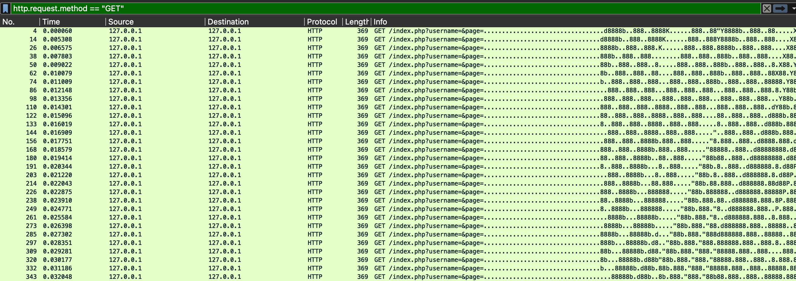
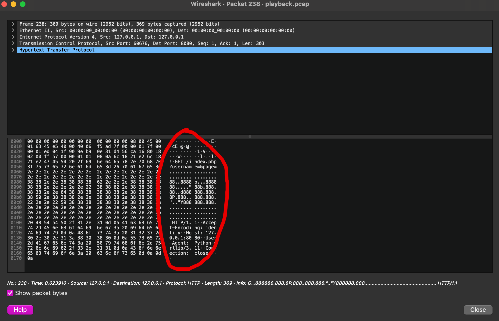
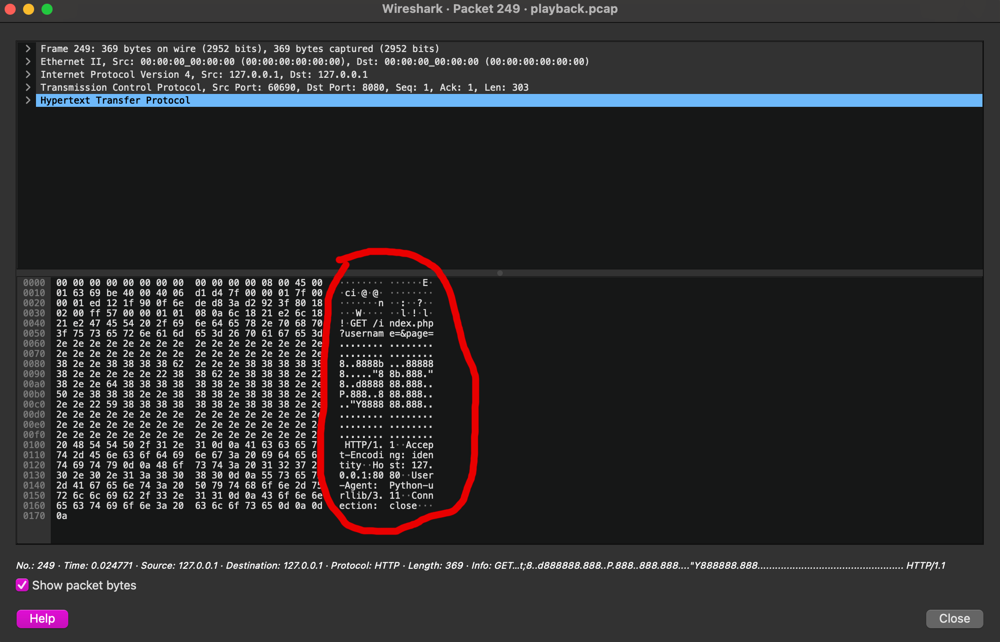
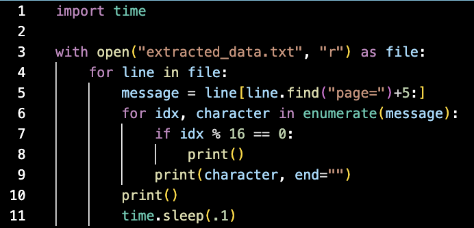

This one was a fairly straightforward forensics challenge, but the solution looked quite pretty so I wanted to make a writeup anyways.
The first thing I noticed when I opened up the provided pcap file in Wireshark was that there seems to be some odd looking data being passed in to the 'page' parameter of the HTTP GET requests.
At first the pattern isn't obvious, but if I double click on a random packet, I can see something interesting.
When the data form this packet is arranged is 16 character rows, we can see that the strange looking data spells out a big letter 'a'.
And if I open up the next packet, I can see that the ASCII-art is shifted one column to the left.
At this point I had a suspicion that if I looked at each of these packets in sequence, it would spell out a hidden message.
But I didn't really feel like doing this by hand in Wireshark, so I wrote a script to play out this animation for me.
First, I extracted the relevant data with the following command:
tshark -r playback.pcap -T fields -e http.request.uri http.request.method eq "GET" > extracted_data.txt
Then I animated the packet data with this script:
This process produced this very satisfying looking result.
And from this video, we can see that the flag is swampCTF{w3lc0m3_70_7h3_l4nd_0f_7h3_pc4p}.